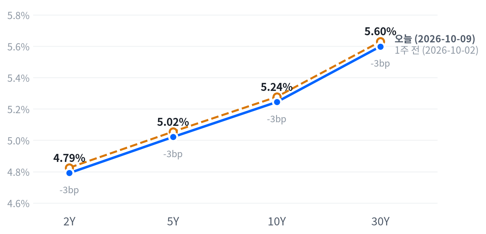

콜럼버스데이로 국채 현물시장이 쉰 월요일, 메모리·광학주가 중국 CXMT의 D램 계획 보도와 함께 급락해 나스닥을 끌어내렸다. 반면 가치·방어주로 매수가 들어와 S&P 지수는 거의 제자리에서 끝났다.
D램을 만들지 않는 HDD 업체까지 비슷한 폭으로 내려, 이번 하락은 중국과의 경쟁 재평가보다 AI 하드웨어 관련주 전반의 포지션 축소로 판단한다. 이 판단은 16일까지 마이크론과 HDD의 상대수익률로 점검하고, 이번 주에는 CPI 이후 금리 반응과 TSMC 실적도 확인한다.
AI 하드웨어 관련주 매도가 나흘째 이어지며 이날 시장을 주도했다. 중국 CXMT의 고밀도 서버용 D램 계획이 보도된 날 마이크론은 4% 가까이 내려 1,000달러 아래로 밀렸고, 회사 소식이 없던 루멘텀은 9.78% 빠졌다. 반면 매수가 가치·방어주로 옮겨 가 업종 대부분은 올랐다.
언론은 하락을 중국과의 D램 경쟁으로 설명했지만, 우리는 AI 하드웨어 관련주 전반의 포지션 축소가 주된 동력이라고 판단한다. D램을 만들지 않는 시게이트가 마이크론과 거의 같은 폭(-3.80%)으로 내렸기 때문이다. Motley Fool에 따르면 루멘텀 CEO는 지난주 2029년 물량이 거의 팔렸다고 밝혔는데, 그런 광학주가 새 회사 발표 없이 더 크게 빠진 것도 이 해석과 맞는다. 가장 강한 반론은 CXMT 진입이 2027년 이후 D램 가격의 정점을 낮춘다는 경쟁 재평가다. 주가가 이 시나리오를 얼마나 반영했는지 보여 줄 가격 지표는 없다. TheStreet가 올해 가장 적은 거래량이었다고 전한 휴일 장이라 하루 움직임에 큰 무게를 두지 않는다.
반도체·AI 하드웨어 업종의 상대수익률은 한 주 사이 더 나빠졌다. 메모리 공급 부족이라는 업종 논리가 훼손된 것인지 수급만 흔들린 것인지는 10월 16일까지 마이크론과 HDD 두 종목의 상대 성과로 점검한다. 이 판단에 맞는 수단은 테마 ETF보다 마이크론과 HDD의 상대 포지션이지만, 차입·비용 자료가 없어 실행은 보류한다. 필수소비재·헬스케어 같은 방어 업종도 강해졌지만, 거래가 얇은 휴일 장 하루라 10월 14일 CPI 전까지는 중기 흐름으로 확대 해석하지 않는다. 이번에는 새 투자 아이디어를 추가하지 않는다.
10월 12일 종가 대비 16일 종가까지의 누적 수익률에서 마이크론이 시게이트·웨스턴디지털 평균보다 3.88%p(이날 마이크론의 하루 낙폭) 넘게 뒤처지면, 포지션 축소라는 판단은 약해지고 D램 경쟁 재평가가 더 설득력을 얻는다. 이 경우 메모리와 HDD·광학 업종을 구분해 평가한다. 10월 14일 08:30(ET) 9월 CPI에서 근원 전월비가 컨센서스 0.2%와 뚜렷이 갈렸는데도 2년물 종가가 같은 방향으로 3.8bp 미만 움직이거나 반대로 움직이면, 단기금리가 물가 지표를 따라 움직인다는 판단은 약해진다. AI 공급망 투자의 수익성 우려가 타당한지는 10월 15일 TSMC 3분기 실적에서 확인한다.
| 지수 | 종가 | 등락률 | 기준일 |
|---|---|---|---|
| 닛케이225 | 69,030.92 | -0.02% | 10월 9일 |
| 항셍 | 24,271.20 | +0.25% | 10월 12일 |
| 상해종합 | 3,797.24 | -0.43% | 10월 12일 |
| DAX | 25,277.68 | +0.76% | 10월 12일 |
| FTSE100 | 10,656.30 | +0.99% | 10월 12일 |
| 유로스톡스50 | 6,201.21 | +0.45% | 10월 12일 |
| VIX | 15.21 | +2.49% | 10월 12일 |
일본 증시는 10월 12일 체육의 날로 쉬어 닛케이는 직전 거래일인 10월 9일 종가다.
아시아와 유럽은 뚜렷한 방향 없이 끝났고 미국도 보합으로 이어 받았다. 항셍이 0.25% 오르고 상해종합이 0.43% 내렸으며 일본은 휴장이었다. 유럽은 세 지수가 모두 올랐지만 FTSE100(+0.99%)을 빼면 오름폭이 작았다. VIX는 15.21로 2.49% 올랐어도 낮은 수준에 머물렀다.
야간 선물은 좁은 범위에서 약세로 기울었다. 주말 사이 후티가 사우디 리야드 공항 공격을 주장했고 CXMT의 D램 계획도 10일 상하이 업계 행사에서 공개돼 심리에 부담이 될 재료는 있었지만, S&P 선물(ES)이 7,858까지 밀린 08:30(ET) 저점을 직접 설명하는 뉴스는 찾지 못했다. 현물은 S&P +0.02%, 나스닥 -0.06%의 갭으로 사실상 보합 출발했다.
세 지수 모두 개장 첫 30분이 그날의 고점이었다. S&P 지수는 하루 범위의 가운데에서 끝났지만, 나스닥과 러셀2000은 저점권에서 끝나 장 초반 매도가 마감까지 이어졌다.
고점권·저점권 경계는 최근 2,253거래일의 일간 종가 위치 이력으로 다시 잰 기준이다.
TheStreet는 필라델피아 반도체지수가 2.7% 내려 나흘 연속 하락했고 다우는 사흘째 올랐다고 전했다. 유가는 주말 중동 공격 보도에 반응해 올랐고, 국채 현물시장과 은행이 쉬어 거래는 얇았다.
| 지수 | 종가 | 등락률 |
|---|---|---|
| 다우존스 | 51,850.55 | +0.38% |
| S&P500 가치주 | 233.90 | +0.38% |
| S&P500 | 7,807.24 | -0.06% |
| S&P500 성장주 | 144.62 | -0.43% |
| 나스닥 | 27,245.90 | -0.44% |
| 러셀2000 | 2,794.48 | -0.45% |
| 섹터 | 등락률 |
|---|---|
| 에너지 | +1.43% |
| 필수소비재 | +1.17% |
| 커뮤니케이션서비스 | +0.97% |
| 부동산 | +0.75% |
| 헬스케어 | +0.69% |
| 금융 | +0.58% |
| 유틸리티 | +0.53% |
| 소재 | +0.02% |
| 산업재 | -0.06% |
| 경기소비재 | -0.51% |
| 기술 | -1.22% |
S&P500은 7,807로 마감해 최근 2년(504거래일) 가운데 이보다 높았던 날이 이틀뿐인 고점 부근을 지켰지만 하루 등락은 거의 없었다. 나스닥은 메모리·광학주 급락에 0.44% 내린 27,246, 러셀2000은 0.45% 내렸다.
하루 움직임은 최근 60거래일 평균 하루 폭 대비 S&P 0.08배, 나스닥 0.42배, 러셀2000 0.53배다.
업종으로는 기술(-1.22%)이 크게 밀렸고 경기소비재(-0.51%)가 뒤를 이었다. 반대편에서는 에너지(+1.43%)와 필수소비재(+1.17%)가 가장 강했다. 커뮤니케이션서비스(+0.97%)는 새 모델 Muse Wonder 발표 뒤 3% 넘게 오른 Meta가 이끈 것으로 본다(Yahoo Finance). 금리에 민감한 부동산·금융·유틸리티도 올랐지만 국채가 쉰 날이라 금리 하락으로는 설명되지 않는다.
성장주(-0.43%)가 가치주(+0.38%)에 뒤져, 지수 낙폭보다 스타일 간 차이가 컸다.
| 만기 | 종가 | 전일比(bp) | 1주 전 | 주간 변화(bp) |
|---|---|---|---|---|
| 2Y | 4.791% | +3.5 | 4.825% | -3.4 |
| 5Y | 5.021% | +3.0 | 5.055% | -3.4 |
| 10Y | 5.244% | +1.1 | 5.277% | -3.3 |
| 30Y | 5.599% | -0.8 | 5.630% | -3.1 |
미국 국채 현물시장은 10월 12일 콜럼버스데이로 휴장했다(SIFMA 권고). 표는 네이버 국채 종가 기준 10월 9일 값(전 만기 동일 기준일)이고, 전일比는 10월 9일 하루 변화다. 1주 전은 10월 2일.

커브 차트도 마지막 거래일인 10월 9일 종가를 1주 전(10월 2일)과 비교한다. 전 만기가 3bp 남짓 내렸다.
국채 현물시장이 콜럼버스데이로 쉬어 10월 12일의 금리는 없다. 마지막 종가인 10월 9일 10년물 5.244%는 최근 2년 가운데 이보다 높았던 날이 이레뿐인 고점권이고, 지난 한 주 동안은 2년물부터 30년물까지 3bp 남짓 고르게 내렸다.
휴장 동안 들어온 정보는 연준 발언과 정책 기대뿐이라, 그에 대한 금리 반응은 10월 13일 다시 열리는 장에서 처음 나온다. 명목금리를 실질금리와 기대인플레로 나눈 최신 자료(10월 8일)에서는 10년물 6bp 하락 가운데 5bp가 실질금리 몫이었다.
5년 뒤 5년 명목금리 5.45%, 실질 3.12%(10월 8일 기준). 위험 프리미엄이 포함된 값이라 미래 단기금리의 기대치로 읽지 않는다.
| 통화쌍 | 종가 | 등락률 | 기준일 |
|---|---|---|---|
| DXY | 102.54 | +0.32% | 10월 12일 |
| USD/KRW | 1,342.99 | +0.29% | 10월 9일 |
| USD/JPY | 158.06 | +0.00% | 10월 9일 |
| EUR/USD | 1.1213 | +0.10% | 10월 9일 |
원/달러·엔/달러·유로/달러는 10월 12일 종가가 들어오지 않아 10월 9일 값이다.
달러지수는 102.54로 0.32% 올라 최근 2년의 상위 25% 안에 있다. 평소와 비슷한 크기의 움직임이다. 원/달러는 10월 9일 1,343원으로, 같은 기간 이보다 낮았던 날이 닷새뿐인 저점권이다.
하루 움직임은 최근 60거래일 평균 하루 폭 대비 달러지수 1.09배다.
달러 강세의 근거는 위험회피와 유로 고유 재료 쪽에 있다. ING는 지정학 긴장 속에 달러가 강세를 유지한다고 봤고, 프랑스 재정 불안이 유로를 따로 약하게 만든다고 썼다. 국채가 쉬어 금리차가 달러를 움직였는지는 이날 확인할 수 없고, 10월 14일 CPI 뒤 2년물과 달러가 같은 방향으로 움직이는지에서 드러난다.
| 품목 | 종가 | 등락률 |
|---|---|---|
| WTI | $92.91 | +1.15% |
| Brent | $105.70 | +0.94% |
| 천연가스 | $3.177 | -1.34% |
| 금 | $4,192.00 | -0.58% |
WTI는 주말 중동 공격 보도에 반등해 장중 저점 대비 4% 넘게 올랐다가 상승폭 일부를 반납했다. 종가는 전일 대비 1.15% 오른 92.91달러였다. 금은 0.58% 내린 4,192달러, 천연가스는 1.34% 내렸다.
하루 움직임은 최근 60거래일 평균 하루 폭 대비 WTI 0.38배, 금 0.45배다.
Reuters는 후티의 토요일 리야드 공항 공격 주장과 오만 인근 유조선 피격 보도가 트럼프 대통령의 러시아산 디젤 공급 발표를 압도했다고 전했다. 브렌트(105.70달러)는 WTI보다 12.79달러 비싸, 지정학 위험은 여전히 국제 유종에 더 붙어 있다.
금 하락은 달러지수 상승과 방향이 맞는다. 다만 10년물 실질금리는 10월 8일 2.87%가 최신이라, 이날 금 하락을 실질금리 변화로 설명할 수는 없다.
미국 경기 국면은 골디락스 판단을 아흐레째 유지한다. 콜럼버스데이라 새 공식 통계가 없어 판단 근거도 그대로다. 성장 점수(-0.024)는 보합 안쪽이고 물가 점수(-0.928)는 여덟 지표가 모두 둔화 쪽이다. 물가 판단은 10월 14일 9월 CPI에서, 성장 판단은 11월 6일 10월 고용에서 다시 점검한다.
| 지표 | Actual | Forecast | Previous | 발표일 | 컨센 대비 | 직전 대비 | 추세 |
|---|---|---|---|---|---|---|---|
| 구인건수(8월) | 7,079K | — | 7,335K | 2026-08 기준월 | 악화 | 악화(미미) · 3개월 평균 7,336K → 7,199K | |
| 신규 실업수당 청구 | 197,000 | — | 199,000 | 2026-10-08 (10월 3일 주간) | 개선 | 개선(완만) · 4주 평균 206K → 198K | |
| 신규 청구 4주 평균 | 198,000 | — | 200,500 | 2026-10-08 (10월 3일 주간) | 개선 | 개선(완만) · 4주 평균 206K → 201K | |
| 계속 실업수당 청구 | 1,716,000 | — | 1,699,000 | 2026-10-08 (9월 26일 주간) | 악화 | 개선(뚜렷) · 4주 평균 1,777K → 1,711K | |
| 비농업 고용 변화(9월) | +29K | — | +133K | 2026-09 기준월 | 악화 | 악화(미미) · 3개월 평균 +81K → +51K | |
| 실업률(9월) | 4.2% | — | 4.1% | 2026-09 기준월 | 악화 | 개선(미미) · 3개월 평균 4.27% → 4.13% | |
| 평균시간당임금 MoM(9월) | +0.13% | — | +0.32% | 2026-09 기준월 | 악화 | 악화(미미) · 3개월 평균 +0.21% → +0.19% |
| 지표 | Actual | Forecast | Previous | 발표일 | 컨센 대비 | 직전 대비 | 추세 |
|---|---|---|---|---|---|---|---|
| 산업생산 MoM(8월) | +0.02% | — | +0.20% | 2026-08 기준월 | 악화 | 보합 · 3개월 평균 +0.24% → +0.14% | |
| 내구재주문 MoM(8월) | -0.07% | — | +0.87% | 2026-08 기준월 | 악화 | 악화(완만) · 3개월 평균 +1.95% → +0.46% | |
| 신규주택판매(8월) | 684K | — | 643K | 2026-08 기준월 | 개선 | 개선(미미) · 3개월 평균 645K → 666K | |
| 기존주택판매(8월) | 398만 | — | 406만 | 2026-08 기준월 | 악화 | 악화(미미) · 3개월 평균 4,080K → 4,057K | |
| 실질GDP QoQ 연율(2분기) | +2.2% | — | +2.5% | 2026년 2분기 기준 | 악화 | — | |
| ISM 서비스업 PMI(9월) | 54.9 | 55.0 | 55.4 | 2026-10-05 | 하회▼ | — | — |
| 지표 | Actual | Forecast | Previous | 발표일 | 컨센 대비 | 직전 대비 | 추세 |
|---|---|---|---|---|---|---|---|
| 소매판매 MoM(8월) | +1.13% | — | -0.46% | 2026-08 기준월 | 개선 | 악화(뚜렷) · 3개월 평균 +1.09% → +0.29% | |
| 미시간대 소비자심리(8월) | 51.7 | — | 55.2 | 2026-08 기준월 | 악화 | 개선(미미) · 3개월 평균 49.3 → 52.1 | |
| 미시간대 소비자심리 10월 예비치 | 46.3 | 47.6 | — | 2026-10-09 | 하회▼ | — | — |
| 지표 | Actual | Forecast | Previous | 발표일 | 컨센 대비 | 직전 대비 | 추세 |
|---|---|---|---|---|---|---|---|
| CPI YoY(8월) | 3.35% | — | 3.30% | 2026-08 기준월 | 상승 | 둔화(미미) · 3개월 평균 3.74% → 3.37% | |
| CPI MoM(8월) | +0.40% | — | +0.07% | 2026-08 기준월 | 상승 | 둔화(뚜렷) · 3개월 평균 +0.66% → +0.02% | |
| Core CPI YoY(8월) | 2.45% | — | 2.47% | 2026-08 기준월 | 하락 | 둔화(미미) · 3개월 평균 2.72% → 2.49% | |
| Core CPI MoM(8월) | +0.29% | — | +0.22% | 2026-08 기준월 | 상승 | 둔화(완만) · 3개월 평균 +0.26% → +0.16% | |
| PPI 최종수요 MoM(8월) | +0.40% | — | +0.07% | 2026-08 기준월 | 상승 | 둔화(뚜렷) · 3개월 평균 +0.79% → +0.12% | |
| PCE 물가 YoY(8월) | 3.42% | — | 3.36% | 2026-08 기준월 | 상승 | 둔화(미미) · 3개월 평균 3.59% → 3.41% | |
| Core PCE YoY(8월) | 3.01% | — | 2.98% | 2026-08 기준월 | 상승 | 둔화(미미) · 3개월 평균 3.12% → 3.01% | |
| 미시간대 1년 기대인플레(8월) | 4.0% | — | 4.2% | 2026-08 기준월 | 하락 | 교착 · 3개월 평균 4.43% → 4.27% | |
| 뉴욕 연은 1년 기대인플레(9월) | 3.9% | — | 3.6% | 2026-10-07 | — | — |
직전 대비는 Actual을 Previous와 비교한 것이고, 추세는 최근 3개월 평균을 그 앞 3개월 평균과 비교한 것입니다(주간 실업수당 청구는 4주 평균끼리). 추세의 세기는 그 지표가 평소 움직이는 폭에 견준 크기이고, 작은 변화는 보합으로 봅니다. 분기 지표인 GDP는 두 비교가 같은 숫자를 보므로 직전 대비만 싣습니다.
연준이 10월 회의에서 동결한 뒤 12월 9일 FOMC에서 25bp 추가 인상한다는 판단을 유지한다. CNBC가 전한 CME FedWatch 기준 12월 9일 회의 인상 확률은 약 88%이고 10월 28일 회의는 동결 확률이 78%를 넘는다. 해먁 클리블랜드 연은 총재의 추가 긴축 발언과 BofA의 12월 인상 전망도 같은 쪽이다.
10월 14일 9월 CPI가 컨센서스를 뚜렷이 밑돌아 보도된 12월 인상 확률이 과반 아래로 내려가거나, 11월 6일 10월 고용에서 실업률이 3월 이후 범위(4.1~4.3%) 위로 올라서면 인상 우위 판단을 철회한다. 반대로 CPI가 뚜렷이 웃돌아 보도된 10월 인상 확률이 다시 과반으로 오르면 시점을 10월 쪽으로 당긴다.
자산별 매크로 판단 일곱 개는 모두 전일과 같다. 메모리의 중기 판단은 데이터센터 투자가 D램 수급을 받친다는 구조에 근거하므로, 하루의 포지션 축소로 바꾸지 않는다.
| 지수 | 순위(5거래일 전) | 1개월 | 3개월 | SPY 대비 3개월 | 대비 변화 | 12-1 모멘텀 | 변동성 | 1일 VaR 95% | 베타 | 50/200일선 | 52주 고점 대비 |
|---|---|---|---|---|---|---|---|---|---|---|---|
| 소프트웨어 IGV | 1(2) | +9.6% | +18.9% | +15.1%p | +2.4%p | -12.2% | 32.9% | 2.2% | 1.51 | 위/위 | -4.9% |
| 에너지 XLE | 2(1) | +1.9% | +16.6% | +12.8%p | -0.1%p | +51.8% | 20.9% | 2.1% | -0.52 | 위/위 | 0.0% |
| 초대형주 Top 50 XLG | 4(5) | +3.1% | +5.1% | +1.4%p | -0.9%p | +8.6% | 13.5% | 0.9% | 1.21 | 위/위 | -0.5% |
| 금속·광업 XME | 9(6) | -7.7% | +0.5% | -3.3%p | -4.6%p | +11.3% | 35.8% | 3.5% | 1.94 | 아래/아래 | -21.0% |
| 반도체·AI 하드웨어 SMH | 10(3) | +4.0% | -1.6% | -5.3%p | -10.4%p | +65.2% | 36.9% | 3.5% | 2.21 | 위/위 | -11.7% |
| 금융 XLF | 11(13) | -3.5% | -1.7% | -5.4%p | +2.0%p | +8.7% | 12.2% | 1.4% | 0.62 | 아래/위 | -5.7% |
| 전력망 GRID | 13(11) | -1.0% | -2.5% | -6.3%p | -2.5%p | +19.2% | 24.7% | 2.5% | 1.56 | 아래/위 | -10.0% |
| 경기소비재 XLY | 15(17) | -0.4% | -2.9% | -6.7%p | +2.9%p | -3.4% | 19.0% | 1.6% | 1.15 | 아래/아래 | -9.3% |
| 소형주 IWM | 17(15) | -3.5% | -5.4% | -9.1%p | -1.2%p | +18.7% | 13.3% | 1.4% | 0.96 | 아래/위 | -8.7% |
| 산업재 XLI | 18(19) | -1.6% | -6.0% | -9.8%p | +0.6%p | +13.4% | 15.2% | 1.5% | 0.84 | 아래/아래 | -9.1% |
| 소형 성장 IWO | 19(16) | -3.7% | -7.3% | -11.0%p | -1.6%p | +12.9% | 17.8% | 2.0% | 1.26 | 아래/아래 | -10.5% |
| 은행 KBE | 20(18) | -6.3% | -7.3% | -11.1%p | -1.0%p | +17.9% | 14.0% | 1.4% | 0.56 | 아래/아래 | -11.1% |
| 방산 ITA | 22(23) | -5.8% | -12.3% | -16.1%p | +3.3%p | +3.8% | 20.1% | 2.2% | 0.83 | 아래/아래 | -18.5% |
| 주택건설 XHB | 23(21) | -3.9% | -12.6% | -16.3%p | -0.9%p | -6.0% | 24.5% | 2.4% | 1.31 | 아래/아래 | -21.7% |
| 모멘텀 팩터 MTUM | 이번 마감 시세 없음 | ||||||||||
| 지수 | 순위(5거래일 전) | 1개월 | 3개월 | SPY 대비 3개월 | 대비 변화 | 12-1 모멘텀 | 변동성 | 1일 VaR 95% | 베타 | 50/200일선 | 52주 고점 대비 |
|---|---|---|---|---|---|---|---|---|---|---|---|
| 헬스케어 XLV | 3(8) | +4.4% | +9.1% | +5.3%p | +7.0%p | +16.1% | 16.3% | 1.4% | 0.12 | 위/위 | -1.7% |
| 배당 SCHD | 5(9) | -1.7% | +4.1% | +0.4%p | +2.9%p | +29.8% | 10.7% | 1.0% | 0.24 | 아래/위 | -4.8% |
| 필수소비재 XLP | 7(14) | +1.9% | +1.9% | -1.9%p | +5.9%p | +9.1% | 14.6% | 1.4% | 0.02 | 위/위 | -4.4% |
| 저변동성 SPLV | 16(20) | -1.2% | -3.6% | -7.3%p | +3.6%p | +4.1% | 9.0% | 0.8% | 0.09 | 아래/아래 | -6.3% |
| 유틸리티 XLU | 21(22) | -1.1% | -8.2% | -12.0%p | +3.8%p | -4.4% | 15.1% | 1.4% | 0.25 | 아래/아래 | -11.0% |
| 퀄리티 팩터 QUAL | 이번 마감 시세 없음 | ||||||||||
| 지수 | 순위(5거래일 전) | 1개월 | 3개월 | SPY 대비 3개월 | 대비 변화 | 12-1 모멘텀 | 변동성 | 1일 VaR 95% | 베타 | 50/200일선 | 52주 고점 대비 |
|---|---|---|---|---|---|---|---|---|---|---|---|
| 일본 EWJ | 6(4) | -1.3% | +3.6% | -0.1%p | -2.9%p | +26.1% | 19.2% | 1.3% | 1.23 | 위/위 | -2.0% |
| 신흥국 EEM | 8(7) | -2.5% | +0.7% | -3.0%p | -3.7%p | +28.3% | 22.4% | 2.1% | 1.42 | 아래/위 | -7.1% |
| 중국 MCHI | 12(10) | -1.5% | -2.0% | -5.8%p | -2.9%p | -17.1% | 15.8% | 1.7% | 0.42 | 아래/아래 | -19.0% |
| 유럽 VGK | 14(12) | -4.4% | -2.6% | -6.3%p | +0.4%p | +15.5% | 12.3% | 1.2% | 0.81 | 아래/아래 | -7.7% |
| 지수 | 순위(5거래일 전) | 1개월 | 3개월 | SPY 대비 3개월 | 대비 변화 | 12-1 모멘텀 | 변동성 | 1일 VaR 95% | 베타 | 50/200일선 | 52주 고점 대비 |
|---|---|---|---|---|---|---|---|---|---|---|---|
| S&P 500 SPY | – | +2.1% | +3.8% | 0.0%p | – | +14.8% | 10.8% | 0.8% | 1.00 | 위/위 | -0.1% |
| S&P 500 동일가중 RSP | – | -0.4% | +0.2% | -3.5%p | – | +14.8% | 9.8% | 0.9% | 0.63 | 아래/위 | -3.9% |
| 나스닥 100 QQQ | – | +4.5% | +3.8% | 0.0%p | – | +17.5% | 17.9% | 1.4% | 1.50 | 위/위 | -1.8% |
가격 기준 시장 국면은 강세이고, 7월 31일 횡보에서 넘어온 뒤 51거래일째다. SPY는 52주 고점보다 0.13% 낮은 자리에서 50일선과 200일선 위에 있어, 메모리·광학주가 무너진 날에도 지수 차원의 국면은 흔들리지 않았다.
한 주 사이 상대수익률이 가장 크게 나빠진 업종은 반도체·AI 하드웨어다. 순위가 3위에서 10위로 밀렸고 SPY 대비 3개월 초과수익이 10.44%p 줄어 -5.3%p가 됐다. 반대편에서는 헬스케어가 8위에서 3위로 올라 초과수익이 5.32%p가 됐고, 필수소비재도 14위에서 7위로 올랐지만 초과수익은 -1.9%p로 아직 SPY에 못 미친다. 방어 업종의 상대 강세에는 기술주가 밀린 한 주의 반사 효과가 섞여 있어, 반도체가 반등하는 날에도 두 업종이 순위를 지키는지 확인해야 한다.
위험 지표는 엇갈린다. VIX(15.21)는 낮고 하이일드 스프레드는 10월 8일까지 5거래일 사이 9bp 좁혀져 자산가격은 위험선호가 이어지고 있음을 시사하지만, 순유동성은 4주 사이 줄었고 금융여건지수도 조금 조여졌다. 금융여건지수가 아직 평균보다 느슨해 긴축이 가격을 누르는 단계는 아니라고 본다.
반도체가 지수 기여 하위를 채웠다(엔비디아 -1.29%, 마이크론 -3.88%). TechNode는 CXMT의 연말 DDR5 서버 메모리 일정이 양산 확정이 아니고 신뢰성·수율 자료도 공개되지 않았다고 전했다.
애플(+1.29%)은 지수 기여 상위였지만 회사 고유의 재료는 확인되지 않았다.
마이크로소프트(+1.14%)는 3세대 자체 가속기 Maia 300을 공개하고 추론 요청을 주로 자체 실리콘으로 처리하겠다고 밝혔다(CNBC). 양산 목표는 2027년이다. GPU 대비 랙당 토큰을 최대 7배 처리한다는 회사 설명은 외부 검증이 없다. Evercore ISI는 Maia가 2027년 1분기까지 마이크로소프트 AI 칩 지출의 약 10%를 차지할 것으로 봤다. 플랫폼 기업이 하드웨어 비용을 직접 통제하려 한다는 점은 소프트웨어 쪽 판단을 뒷받침하고, 반도체에는 주요 고객의 의존 축소라는 부담을 남긴다.
광학·전자부품에서는 코히런트(-7.87%)와 코닝(-6.0%)이 크게 내렸다. 24/7 Wall St.는 광학주 하락에 회사 보도자료가 없었다고 전했고, TradingKey는 수개월 랠리 뒤 차익실현을, 코닝에는 기존 ATM 증자 프로그램의 희석 우려를 들었다. 확정된 원인은 없다.
페어아이작(+10.85%)은 9월 말 FHFA발 신용점수 경쟁 우려로 급락한 뒤 반등했지만, 당일의 단일 촉매는 확인되지 않았다.
메모리 하락을 포지션 축소로 본 판단(10월 12일 신규)의 근거는 이날 HDD 두 종목 평균(-3.20%)과 마이크론의 하루 수익률 차이가 -0.68%p에 그친 것이다. 검증은 세 종목 각각의 10월 12일 종가 대비 16일 종가까지 누적 수익률로 한다. 마이크론이 HDD 두 종목 평균보다 3.88%p 넘게 뒤처지면 판단은 약해지고, 그렇지 않으면 지지된다. 경쟁 재평가가 맞다면 동반 매도가 풀릴 때 HDD만 반등해 이 차이가 벌어진다. 이 기준은 이날 마이크론의 하루 낙폭에서 가져왔고, 두 업종의 변동성 차이는 보정하지 않았다. 그 사이 세 종목 가운데 하나에 회사 고유 뉴스가 나오거나, CXMT가 양산·고객을 확정하거나, TSMC 실적 보도가 메모리나 HDD 한쪽에만 연결되면 상대 비교로 결론을 내지 않는다.
단기금리가 고용보다 물가에 반응한다는 판단(10월 2일)은 CPI 반응을 10월 13일 종가에서 14일 종가까지의 2년물 변화로 잰다(국채가 쉬어 2년물은 10월 9일 4.791%에 멈춰 있다). 3.8bp는 10월 2일 고용 발표일 2년물 반응의 절댓값이다. 근원 전월비가 컨센서스 0.2%와 뚜렷이 갈렸는데도 2년물이 같은 방향으로 3.8bp 미만 움직이거나 반대로 움직이면 판단은 약해진다. 근원 전월비가 컨센서스 부근이거나 같은 날 독일·프랑스 10년물이 크게 움직여 글로벌 요인이 겹치면 결론을 내지 않는다. ING는 근원이 컨센서스를 웃돌 위험을 봤다.
AI 최종 수요의 수익화 기대가 낮아져 공급망 주가가 재평가된다는 판단(10월 8일)에는 엇갈린 증거가 더해졌다. AI 인프라 다섯 종목은 평균 4.65% 내렸지만 구매자인 마이크로소프트와 Meta는 올랐다. 마이크로소프트의 자체 칩 발표와 Broadcom·Intel CEO의 자본 조달 제약 발언(CNBC)은 공급망이 받을 지출에 대한 의문을 키워 판단을 뒷받침한다. 반면 회사 소식 없는 광학주 하락과 올해 최저 거래량은 단순한 포지션 정리라는 반대 설명에 힘을 싣는다. 사전에 정한 확인 기준이 아니어서 판정하지 않고, 다음 확인은 10월 15일 02:00(ET) TSMC 3분기 실적이다.
AI 자본지출 랠리가 연준 인상 사이클과 따로 간다는 판단(9월 22일)은 이날 점검하지 못했다. 금리 민감 업종의 약세와 실질금리 상승이 함께 나타나는 날 AI 관련주가 둔감한지 봐야 하는데, 이날은 해당 업종이 올랐고 국채도 쉬었다. 은행주 약세를 실적을 앞둔 포지션 조정으로 보는 반대 설명은 10월 13일 은행 실적에서 점검하고, 확인 기한은 10월 28일 FOMC다.
스페이스X의 주파수 인수 뒤 통신 3사 급락을 장기 가격결정력의 재평가로 본 판단(10월 9일)은 유지한다. 붐비던 방어주 포지션의 과잉 반응이라는 반대 설명도 그대로 두며, 커뮤니케이션서비스의 상승은 Meta가 이끈 것이라 통신 3사의 반등 근거로 쓰지 않는다. 통신 3사의 새 가격 자료가 없어 10월 26일 07:00(ET) 베라이즌 3분기 실적일 종가에서 다시 확인한다.
이 보고서의 시세는 Yahoo Finance와 네이버 국채 종가, 경제지표는 FRED와 각 발표 기관(BLS·BEA·Census 등), 그 밖의 내용은 본문에 밝힌 출처에서 가져왔다. 이 보고서는 투자 자문이 아니며 특정 자산의 매수·매도를 권유하지 않는다. 투자 판단과 그 결과에 대한 책임은 전적으로 투자자 본인에게 있다.